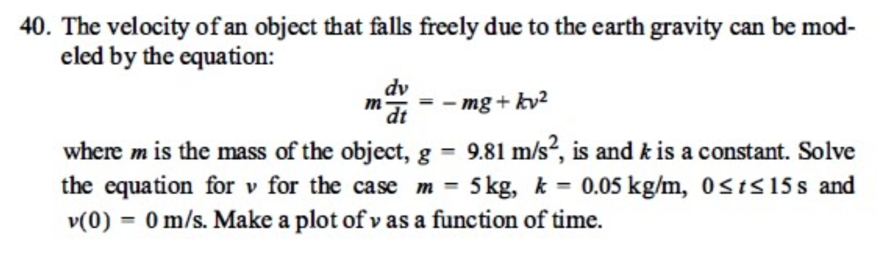

Ejercicio 3: Caída libre con resistencia cuadrática
La velocidad de un objeto que cae libremente debido a la gravedad terrestre puede modelarse con la siguiente ecuación:
$$ m \frac{dv}{dt} = -mg + kv^2 $$
donde \( m \) es la masa del objeto, \( g = 9.81 \, \text{m/s}^2 \) y \( k \) es una constante.
Se debe resolver la ecuación para \( v(t) \) en el intervalo \( 0 \leq t \leq 15 \, \text{s} \), con:
\( m = 5 \, \text{kg} \),
\( k = 0.05 \, \text{kg/m} \),
\( v(0) = 0 \, \text{m/s} \)
Realiza una gráfica de \( v(t) \) en función del tiempo.
Ver tabla de resultados
Gráfico de velocidad v(t)
Conclusiones
- El modelo de caída libre con resistencia cuadrática permitió simular cómo la fuerza de fricción aumenta con el cuadrado de la velocidad, lo que lleva al objeto a alcanzar una velocidad límite (terminal).
- Se observó que la velocidad del objeto se estabiliza con el tiempo, lo cual es coherente con la teoría física donde el peso del objeto se compensa con la fuerza de resistencia.
- El método de Runge-Kutta de cuarto orden mostró un mejor desempeño en la estimación de la velocidad terminal, presentando una mayor suavidad y precisión numérica a lo largo del tiempo.
- El método de Heun, aunque más sencillo y computacionalmente eficiente, presentó ligeras diferencias en los valores intermedios, especialmente cuando la velocidad cambia rápidamente al inicio.
- En general, ambos métodos son válidos para resolver este tipo de problemas físicos no lineales, pero RK4 es preferible cuando se requiere una solución más cercana a la real con pasos discretos moderados.